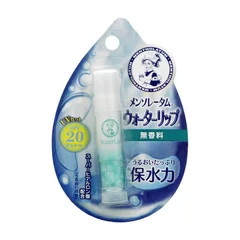

昼にこまめに塗り直したい人

メンソレータム
ウォーターリップ 無香料 4.5g
4.5g
¥149税込・出典掲載価格
選び方と声
- 選ぶ条件：昼に軽く、こまめに塗り直したい人。商品ページの説明では、ヒアルロン酸とコラーゲンを配合したみずみずしい塗り心地で、SPF20/PA++の紫外線カットつき。口紅の前の下地にも使いやすい。
- ガルでは、安いのにふつうに良かった、という声があった
気になる声気になる点：夜のこってり感はないので、夜は物足りないかもしれない。成分にラノリン・ハチミツ・ホエイ（牛乳）が入っているので、アレルギーのある方は先に成分を確認
販売価格・容量・送料はリンク先でご確認ください